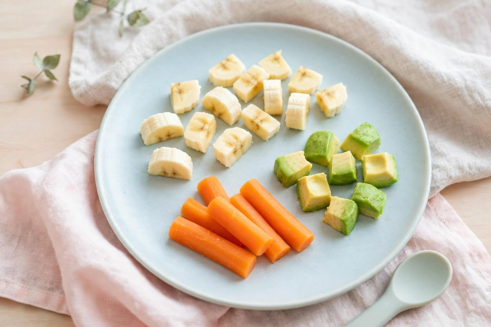

Home » Guides
Baby Snacks

Snacks become part of a baby's day from around eight to ten months, once they are eating three meals a day. A snack is a small, nutritious top-up between meals, not a meal in itself, and it should not spoil their appetite for the next meal. The best baby snacks are simple, soft, and easy to hold: fruit, yoghurt, toast fingers, and soft vegetables. This guide covers which snacks suit each age, how to fit them into the day, and which popular snacks are best avoided.
Snacks for eight to ten months
At this age, snacks should be soft and easy to manage. Good choices are a strip of omelette, a rice cake with thinly spread cream cheese, a few pieces of soft fruit like banana or ripe pear, or a steamed vegetable stick. A small pot of full-fat yoghurt is a good protein-rich snack. Offer one snack a day at first, mid-morning or mid-afternoon, and keep portions small. Always supervise snack time and sit your baby upright, just as you would at a meal.
Snacks for ten to twelve months
Older babies can manage two snacks a day and a wider range of foods. Try toast fingers with nut butter, small pieces of cheese, mini pancakes, or cooked pasta pieces. Fruit is always a good snack: berries cut in half, melon pieces, or a small banana. Yoghurt, fromage frais, and soft cheese add calcium and protein. Finger foods like soft-cooked carrot sticks, cucumber strips with the seeds removed, and small pieces of pitta bread are all good choices. Keep snacks simple and avoid anything that needs a lot of chewing.
Snacks to avoid
Many snacks marketed for babies are high in sugar or salt and low in nutrition, so check labels carefully. Avoid biscuits, rusks, and snack bars with added sugar, crisps, and anything with added salt. Dried fruit is sticky and can damage emerging teeth, so offer it only rarely and with a meal. Whole nuts, popcorn, and hard sweets are choking hazards. Fruit juice, flavoured milk, and fizzy drinks are not suitable for babies: water and milk are the best drinks. Home-made snacks are almost always healthier and cheaper than packaged ones.
Fitting snacks into the day
Offer snacks about halfway between meals so they do not spoil the next meal. A typical day for a ten-month-old might be breakfast at seven, a snack at ten, lunch at twelve, a snack at three, dinner at five, and a milk feed before bed. Keep snack time calm and seated, not while walking or playing. If your baby is not hungry for a snack, do not push it; appetite varies from day to day. Snacks are an extra, not a requirement, and milk still provides much of their nutrition.
Stocking a snack cupboard
A well-stocked snack cupboard makes healthy snacking easy. Keep a basket of fruit, such as bananas, pears, and berries, where you can reach it quickly. Store rice cakes, oatcakes, and small pots of yoghurt in the fridge, and keep a bag of frozen berries for smoothies and snacks. Prepare a few finger foods in advance, such as steamed vegetable sticks, toast fingers, and small pieces of cheese, and keep them in the fridge in a sealed container. Avoid keeping biscuits and crisps in the house, because they are the first thing you reach for when you are busy, and your baby will copy what you eat.
Frequently Asked Questions
How many snacks does a baby need each day?
None before eight months, one a day from about eight to ten months, and up to two a day from ten to twelve months, alongside three meals and milk feeds.
Are baby snack bars healthy?
Most are not. Many contain added sugar, fruit juice concentrate, or salt. Fresh fruit, yoghurt, and toast fingers are better choices.
Can babies have biscuits as a snack?
Occasionally is fine, but biscuits are high in sugar and low in nutrients. Save them for rare treats rather than everyday snacks.
Important: every baby is different. Always follow your pediatrician's advice on when to start solids, which foods to offer, and how to introduce allergens. The guidance on this site is general information, not medical advice.